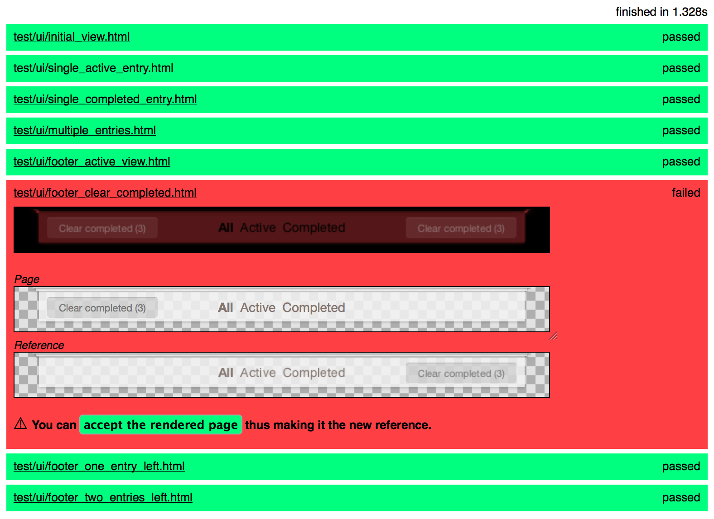

A lightweight framework for regression testing of Cascading Style Sheets
CSS Critic is here to fill the gap in your test tooling.
Watch the screencast and learn how to write your first test:
You can have a look CSS Critic Examples which collects example applications with a UI test suite built on top of CSS Critic.
CSS Critic checks your current layout constantly against a reference image you have provided in the past. If your layout breaks (or simply changes - CSS Critic can't tell) your tests fail.
Get started:
Create a RegressionRunner.html similar to the one under example/ and put it with your code that is to be tested.
Register your page under test via:
csscritic.add(PUT_THE_PAGE_URL_HERE);
csscritic.execute();
Open the RegressionRunner.html in Firefox for the first time and save the resulting image as future reference.
Re-run the RegressionRunner.html and see your test passing. Congratulations.
What do I do if my test fails?
Have a look at the diff image and visually check what has changed.
If the change is an unwanted one fix your CSS,
If deliberate generate a new reference image.
The test suite in action for the TodoMVC application.
RegressionRunner.html or in ones below.Maintained by @cburgmer. Copyright (c) 2012 ThoughtWorks, Inc.
Licensed under MIT.